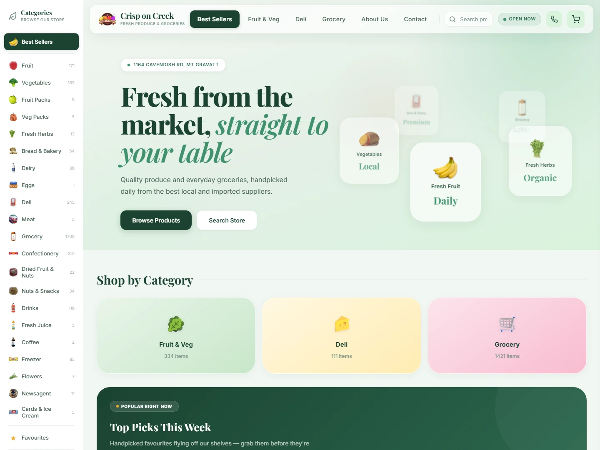
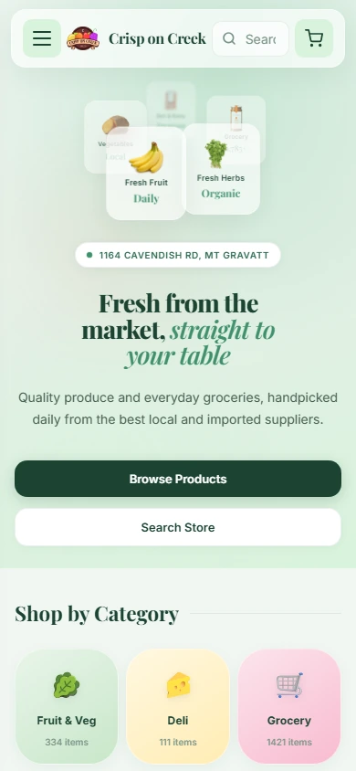
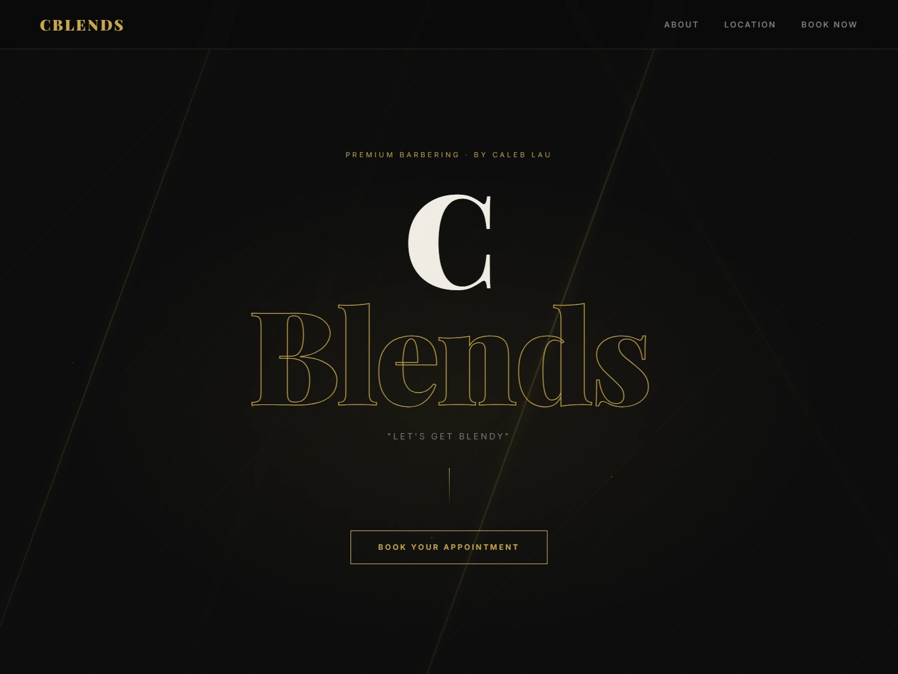
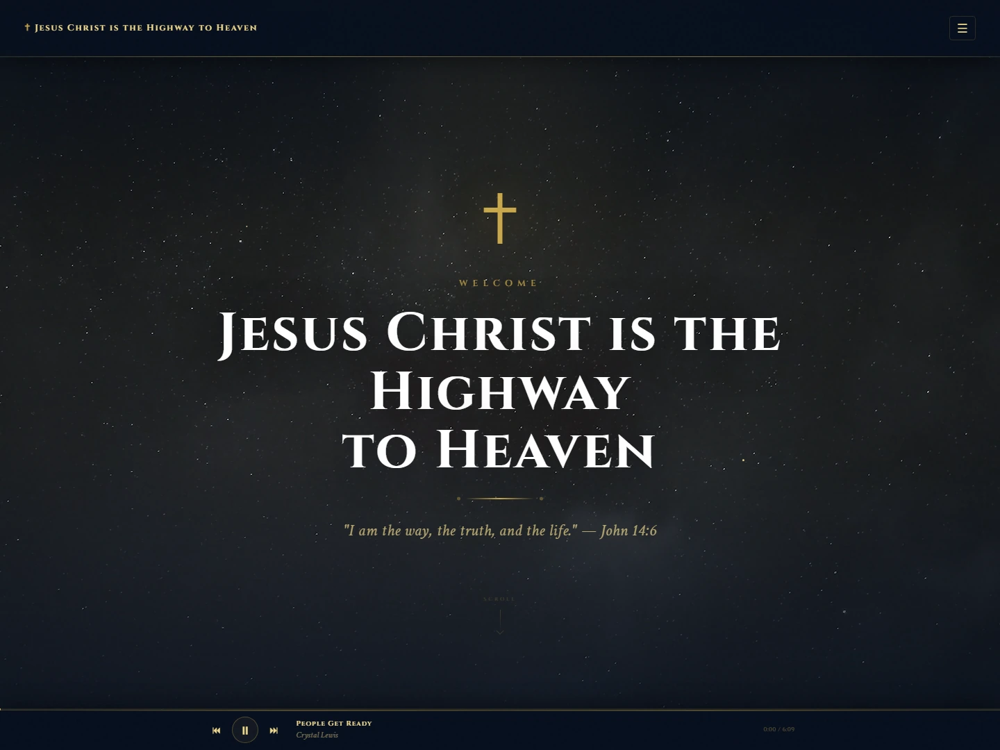

Website design & SEO · Brisbane
Clear, fast,
professional.
A website that loads quickly, says what it needs to say, and makes it obvious how to get in touch. Then SEO work that helps the right people in Brisbane actually find it — without ranking guarantees or confusing reports.

Website design
A site that
actually works.
Built for real visitors: loads fast, reads clearly on any screen, and makes it easy to take the next step.
Most small business websites lose customers to vague messaging, slow loading times, or no clear path to get in touch. I build responsive sites from the ground up — no page-builder bloat, no generic templates — designed around what your business actually needs to say.
You work with me directly. Every decision about structure, copy and layout is made with you, not handed to a designer you never speak to.
-
Clear messaging
What you do, who it's for, and how to get in touch — answered immediately, without making visitors hunt for it.
-
Fast and responsive
Loads quickly on any device. No unnecessary scripts, no oversized images, no layout that breaks on mobile.
-
An obvious next step
Every page has a clear action — a phone number, a contact form, a booking button — that's easy to find without scrolling.
-
Built to be found
Structured from the start for search engines — correct headings, titles, canonical tags, and a clean sitemap — so SEO work has a solid base.
Desktop — crisponcreek.com.au

Mobile
The same site adapts cleanly to any screen — content stays readable and the key contact action remains obvious on mobile.
Portfolio — live sites
Real sites,
real businesses.
Three sites built and shipped — each with clear messaging, a specific audience, and an obvious path to take action.
Crisp on Creek
Online grocer storefront. Responsive product-browsing site with simple navigation and a direct path to order.
Visit site →
CBlends
Barbershop brand site with booking entry point. Clean branding and a prominent book-now call to action.
Visit site →
Edwin Lewis
Author and faith story site. Calm, reading-focused layout presenting an autobiography and personal testimony.
Visit site →Search engine optimisation
Practical SEO
for Brisbane
businesses.
No guaranteed rankings — just steady improvements that make your site easier to find and trust. These are the five problems I look for first.
Technical SEO
Crawl and indexability check, page titles, meta descriptions, canonical tags, sitemap, robots.txt, broken links, and basic schema markup.
On-page SEO
Service pages aligned to what people actually search for — clear headings, keyword-focused titles, strong structure, and internal linking.
Local SEO
Google Business Profile review, LocalBusiness schema, and consistent name, address, and phone number across the web.
Performance & UX
Core Web Vitals review, oversized image checks, mobile usability, and page speed recommendations.
Tracking & reporting
Search Console setup or review, monthly keyword and page performance, and a short plain-English report with clear next steps.
No tricks. Just the boring things done properly.
Good SEO is mostly clarity, consistency, and useful pages. I focus on the work that actually helps search engines understand your site — not shortcuts that create problems later.
Technical foundations
Local search signals
Better service pages
Plain-English reporting
SEO packages
Choose a
starting point.
No lock-in contracts. Start with an audit or go straight to monthly work — your call.
SEO Audit & Setup
For businesses that need to understand what is holding the site back before committing to anything ongoing.
- Full technical audit and findings report
- Search Console setup or review
- Metadata check across key pages
- Local SEO baseline check
Know exactly what is blocking the site and what to fix first.
Ask about Audit & Setup →Local SEO Monthly
For Brisbane businesses that want steady improvement in local search over time.
- Monthly on-page and local SEO work
- Google Business Profile optimisation
- Service page recommendations
- Monthly Search Console report
Improve the pages and local signals that matter for Brisbane searches.
Ask about Local SEO →SEO Growth Monthly
For businesses ready to go beyond the basics with content, research, and broader reach.
- Everything in Local SEO Monthly
- Keyword research and content gap planning
- New page briefs and competitor comparisons
- Conversion improvements on key pages
Build a steady cycle of content, fixes, and reporting.
Ask about SEO Growth →What I do not promise.
Want to know what's holding your site back?
Send me your website address and I'll take a look at what can be improved.